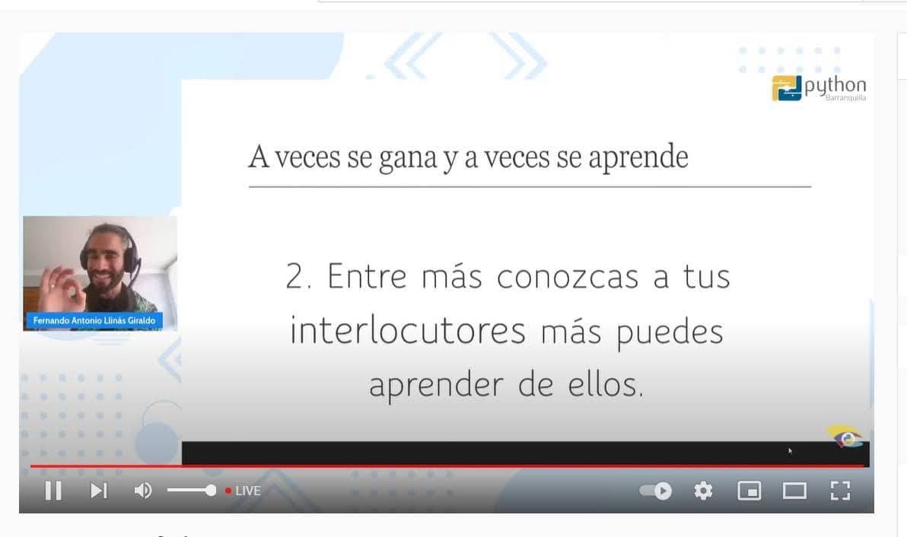
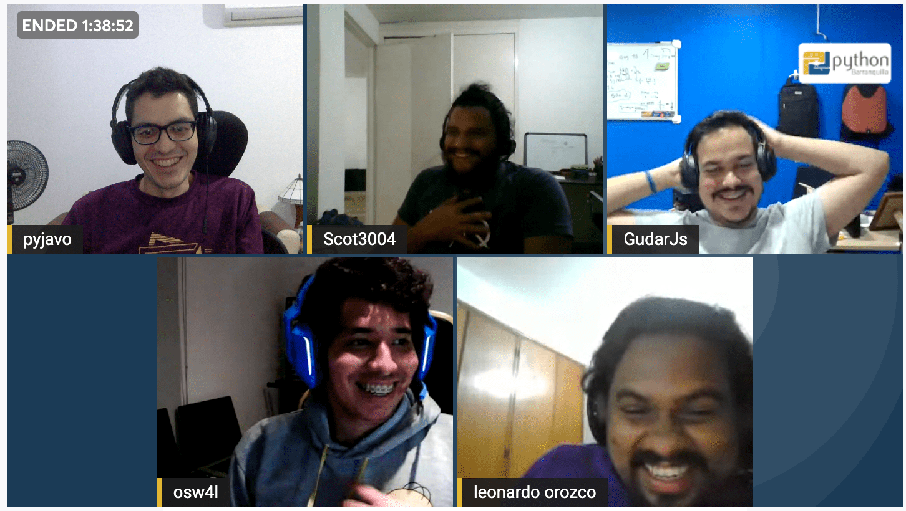
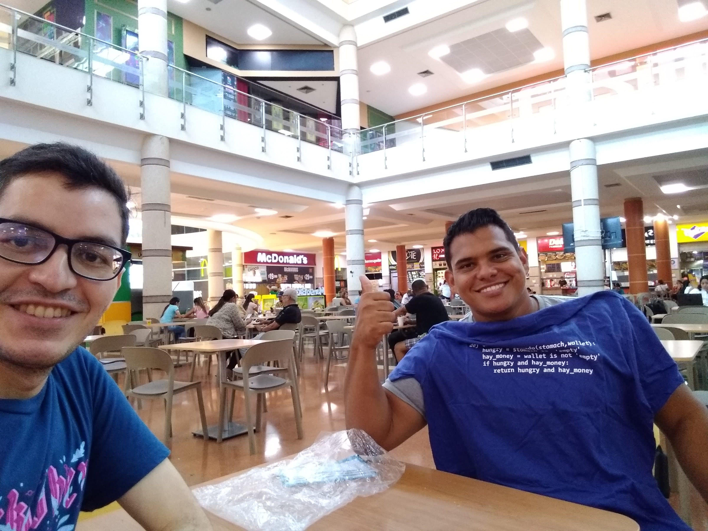
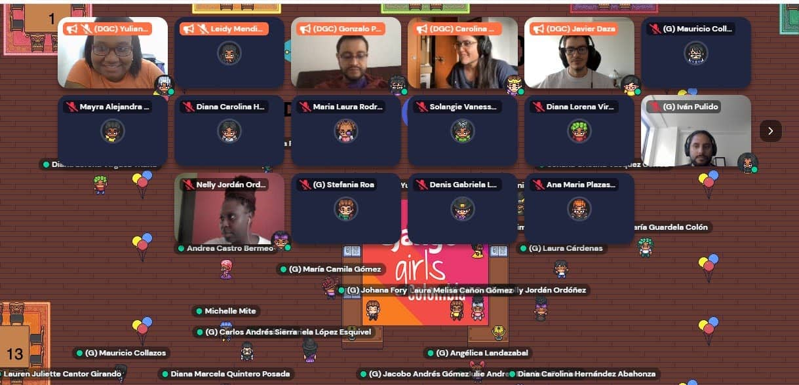
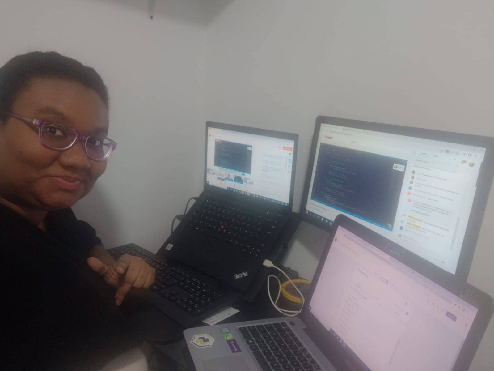
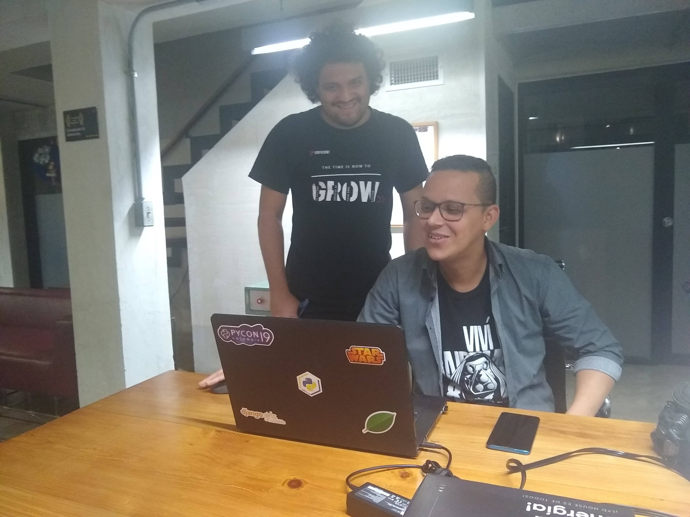
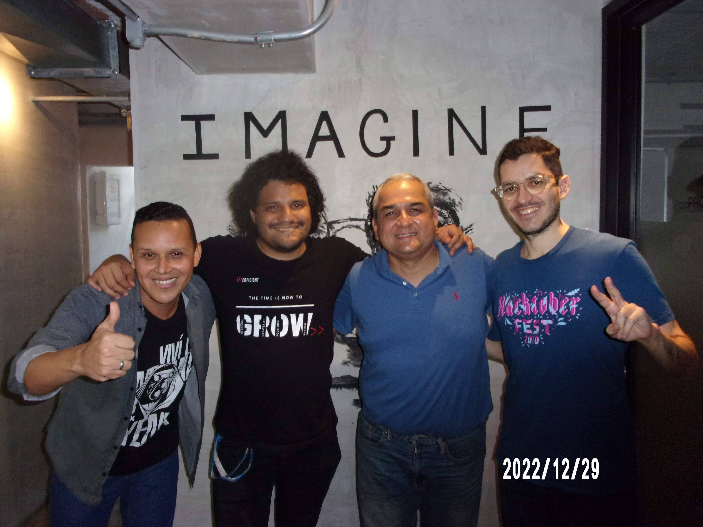

El año 2022 fue otro año particular para la comunidad, pues volvimos a tener todas las reuniones virtuales. Para este año ya nos habíamos acostumbrado perfectamente a la virtualidad, así que aprovechamos para invitar a un par de ponentes internacionales.
Pueden encontrar las diapositivas de las charlas, los enlaces de sus videos y los repositorios de Github o Jupyter notebooks (si aplican) en la sección de eventos.
1. Reunión de Bienvenida de año 2022 (Virtual)
En enero tuvimos nuestra habitual reunión de bienvenida de año dónde compartirmos con la comunidad en un entorno más casual. El aspecto interesante de este mes fue que uno de los participantes de la Liga Python 2021 nos comentó su deseo de unirse al grupo de colaboradores de la comunidad. Siempre necesitamos ayuda en la logística, por lo que es una gran noticia para nosotros.
¡Bienvenido Fernando!

2. Detección de Cáncer Pulmonar usando Procesamiento de Imágenes
La primera charla del año la empezamos con pie derecho, pues tuvimos como invitado a Josimar Chiré desde Perú con una charla muy interesante sobre procesamiento digital de imágenes. A Josimar ya lo habíamos tenido como ponente de manera presencial en el 2019 con la charla Inteligencia Artificial y sus Aplicaciones cuando visitó Barranquilla por motivos de sus estudios de postgrado. Fue muy agradable contar con su proactividad, ya que él mismo nos contactó y nos propuso dar una charla.
Pueden encontrar las diapositivas de su charla de 2019 en nuestro Google Drive.
🔊🔊🔊 Puedes encontrar su charla en este enlace https://youtu.be/fAG3_nMPpjU. 📢📢📢
3. Cross Modal: Conectando el mundo de NLP con el de Computer Vision
Para marzo, contamos con Wayner, un viejo conocido de la casa. Él nos ha estado acompañando y compartiendo su conocimiento desde 2016. Su primera charla fue sobre "Análisis de sentiemientos". Acá pueden encontrar su Jupyter Notebook.
La charla de cross modal está enfocada a un nicho particular dentro de la comunidad que les apasiona los temas de intelitengia artificial y ciencia de datos. Vale la pena ver la charla.
🔊🔊🔊 Puedes encontrar su charla en este enlace https://youtu.be/hLOxurqMOkQ. 📢📢📢
4. Conversatorio de junior a senior: Conmemorando 7 años de comunidad

En esta evento conmemorativo, trajimos a varios pythonistas que nos estuvieron acompañando en los primeros eventos del 2015. Fue una charla amena, llena de mucha nostalgia y experiencias en la industria de la tecnología.
🔊🔊🔊 Puedes encontrar el conversatorio en este enlace https://youtu.be/M5-witzXkDk. 📢📢📢
Por cierto, cumplimos el 31 de marzo, así que se aceptan regalos :P (en forma de charlas, patrocinios, donaciones, pocillos y lo que les nazca jeje)
Algo adicional que hicimos en abril fue por fin entregar la última camiseta que teniamos en stock de nuestra colección exclusiva "temporada primavera-verano 2019" 👘😜 (la vendimos en 2019 pero no la habíamos podido entregar jajaja)

5. SymPy como herramienta de aprendizaje en matemáticas y programación
Para mayo no teníamos ni idea de quien iba a dar la charla (como siempre jajaja), así que preguntamos en el grupo de Telegram de Python Colombia y así fue como conocimos a Alfonso Jiménez. Me parece que fue su primera charla con la comunidad, así que estaba muy emocionado (y nosotros también).
Puedes encontrar su Google Colab notebook aquí.
🔊🔊🔊 Puedes encontrar su charla en este enlace https://youtu.be/L7PsaOu0bSQ. 📢📢📢
5**. Django Girls Colombia (virtual)

Aunque no fue un evento que colocamos en nuestra agenda, un par de personas del equipo PyBAQ participamos como organizadores y mentores de las asistentes al taller.
Fue bonito volver a un Django Girls, así sea de manera virtual.
6. Principios SOLID en Python

Directamente desde Argentina, contamos con la participación de Emiliano Martin, technical leader en Mercado Libre. Sin duda, una de las charlas más vistas en el año. Emiliano supo transmitir la teoría y la práctica de una forma magistral. Es mi charla #1 recomendada del 2022.
Entre otras cosas, esta fue la primera vez que Yuliana se encargó 100% de un streaming en Youtube. Todo marchó viento en popa, excepto al final cuando ella tuvo problemas para finalizar la transmisión. Si buscan el final del video, verán que los últimos 2 minutos parecen una sesión de co-working en vivo 🤣🤣.
🔊🔊🔊 Puedes encontrar su charla en este enlace https://youtu.be/ZjQyjDWyLCc. 📢📢📢
7. Automatización de UI en Python aplicando el patrón Screenplay
Para finales de julio, Scot, como le decimos de cariño a Sergio Orozco. del equipo de PyBAQ se postuló a hacer una charla en el área que más tiene experiencia, Quality Assurance (QA para las amistades).
Solo para que sepan, cuando alguien del team PyBAQ da una charla, es porque hay dos posibles razones:
- No encontramos a nadie y fue nuestro tributo del mes (LOL).
- Verdaramente quería compartir este conocimiento con la comunidad.
¿Cuál crees que fueron las razones de Scot? Déjanoslo saber en los comentarios :P

🔊🔊🔊 Puedes encontrar su charla en este enlace https://youtu.be/s_h5uAZB8yU. 📢📢📢
8. Fomentando la programación desde la infancia
Esta fue una de las charlas que más contaba con ansias organizar. En esta ocasión contamos con la participación de dos padres de familia: Johann Echavarría, un compañero de la comunidad Colombia dev y de Jairo Coronado, el papá de un niño al que le doy clases personalizadas de Python. Por cierto, pueden encontrar mis cursos en https://javierdaza.co/cursos/.
A pesar de participar en la organización, reunión previa de preparación y en la presentación del evento en vivo, me quedé en el backstage y le cedí la palabra a Fer que también es padre de familia.
🔊🔊🔊 Puedes encontrar el conversatorio en este enlace https://youtu.be/RIx-Wf1dZ6U. 📢📢📢
9. Consiguiendo trabajo como programador a los 45 años
Luego de la charla de SOLID en Python, esta es mi charla recomendada #2 de 2022. Aquí nos sumergimos en la historia de vida de Jorge Rueda y su experiencia para entrar en el mundo de la tecnología y programación a una edad que muchos pensarían que es imposible.
Cuando tuvimos la charla de preparación con Jorge y le preguntamos a Fernando cuál era su impresión, esto fue lo que nos respondió:
"Acabo de hablar con Jorge Rueda y quedé sencillamente ilusionado. La charla de Jorge puede ser de la historias más impactantes que haya oído en años. Y vamos a tener el orgullo y el placer de compartirla. ¡Qué maravilla!"
🔊🔊🔊 Puedes encontrar su charla en este enlace https://youtu.be/kOSqcrgTlhI. 📢📢📢
10. Introducción al Pentesting

Para octubre, Atx, como le decimos de cariño a Sergio Molinares (si, otro Sergio. ¿Ya ves por qué los apodos?), es un apasionado por la ciberseguridad y el hacking (¡viva el red team!) que nos viene acompañando desde el 2019.
En esta, su segunda charla con la comunidad, nos demuestra además de sus conocimientos técnicos, sus habilidades blandas para mantener a un público apasionado en su charla ¡por más de 1 hora!. Si ves el video completo, quédate hasta el final porque las preguntas del público son de los mejores eventos que encontrarás en esta presentación (también hay una sesión de preguntas en el medio)
🔊🔊🔊 Puedes encontrar su charla en este enlace https://youtu.be/pDu87a3lr78. 📢📢📢
11. Crea tus propias videollamadas con Python y WebRTC
En esta charla vuelve otro viejo conocido de la casa, Darío Guzman, co-organizador de la comunidad en 2018, ponente en PyCon Colombia 2019 y mentor de múltiples de los talleres Django Girls que hicimos en Barranquilla y en sus alrededores (también organizamos uno en Cartagena en el 2017).
De esta charla puedes encontrar también un balance de teoría y código que valen la pena ver con detalle. ¡Una charla imperdible del 2022!
🔊🔊🔊 Puedes encontrar su charla en este enlace https://youtu.be/XtJncjNegvQ. 📢📢📢
12. De psicólogo a programador ¿cambio o complemento de carrera?
Para diciembre tuvimos la cereza del pudín, mi charla recomendada #3 de 2022. Directamente desde Perú, el compatriota Julían Casadiego nos comparte su experiencia de vida de como un psicólogo aprende a programar con Python.
Su charla es una de esas joyas que rara vez encontrarás en internet.
🔊🔊🔊 Puedes encontrar su charla en este enlace https://youtu.be/Dzi89oXcRUg. 📢📢📢
12+1. Altos y bajos en el equipo de co-organizadores

Este 2022 un año de altos y bajos dentro del equipo. El año lo empezamos con alegría al recibir a Fernando como colaborador, pero, por otro lado, continuamos trayendo un elefante blanco que veníamos cargando de 2021.
A mediados de 2021, Paula y Brayan habían pedido un tiempo fuera como co-organizadores para dedicarse a asuntos personales, por lo que, como ustedes imaginarán, ¿qué ocurre en todo equipo de voluntarios? menos manos colaboradoras se traduce en más trabajo para los que quedamos a cargo de la comunidad. Por suerte logramos balancear cargas (es decir, dejar de hacer actividades/proyectos y reuniones internas jajaja).
Para octubre o noviembre ambos pidieron la baja. Paula dejó el equipo y Brayan pasó a ser colaborador (un rol que exige menos responsabilidades al de un co-organizador). Como siempre, ver partir a alguien del equipo organizador es un momento un poco triste (a pesar de que ya lo veíamos venir). Paula y Brayan nos acompañaron creo que por 3 años más o menos en múltiples eventos oficiales de la comunidad Python Colombia tanto en Barranquilla como en Medellín, así como también de reuniones de equipo y una que otra salida casual. Muchísimas gracias por todo lo que hicieron ♥️.
En últimas, lo que ocurrió de forma orgánica, es que el grupo de WA de co-organizadores se fue aglutinando con los ponentes de septiembre, octubre y noviembre, por lo que les preguntamos si querían ayudarnos ¡y dijeron que sí! Ya veremos como se nos dan las cosas con este nuevo equipo.
En diciembre tuvimos una breve reunión para alinear expectativas y ver en que podemos colaborar cada uno. Seguiremos buscando más manos colaboradoras en próximos eventos, así que si eres una de esas personas que les gusta ayudar, ¡alza la mano!
14. Falta de una mayor representación femenina
Este año brillo por su ausencia la cuota femenina en la comunidad. No lo digo por las participantes (me pareció ver varias chicas en los chats de Youtube) ni por Yuli del team PyBAQ (¡vamos que vamos!), sino que me refiero a la cuota de ponentes y de colaboradoras/co-organizadoras.
Hasta 2021, el team PyBAQ contaba con un 50% de participación femenina pero para finales de 2022 quedamos desbalanceados al tener una mayoría claramente masculina dentro del equipo.
Por otro lado, la última ocasión que contamos con chicas como ponentes fue en las semifinales del grupo 2 de La Liga Python 2021, donde participaron Tatiana Davila y Vanessa Rodriguez.
En mi opinión, la falta de hacer talleres Django Girls en la ciudad los últimos 2 años afectó directamente la diversidad de la comunidad. De estos eventos no son muchas chicas las que se nos unen, pero las que lo llegan a hacer, crean un gran impacto en la comunidad (como por ejemplo: Paula, Sara, Yuliana, Kathy y Judy llegaron a la comunidad por estos talleres).
De parte del "team PyBAQ" les agradecemos mucho a los ponentes que tuvimos este año 2022, a nuestros patrocinadores y/o aliados por estar apoyando este gran esfuerzo comunitario, y a todas las personas que participan activamente y nos escuchan.
Espero haber hecho un buen resumen del 2022 para la comunidad ¿hay algo más que me haya hecho falta añadir? Por favor déjanoslo saber en los comentarios.
Nos vemos en el 2023 con más eventos, aprendizaje y programación.
PySaludos